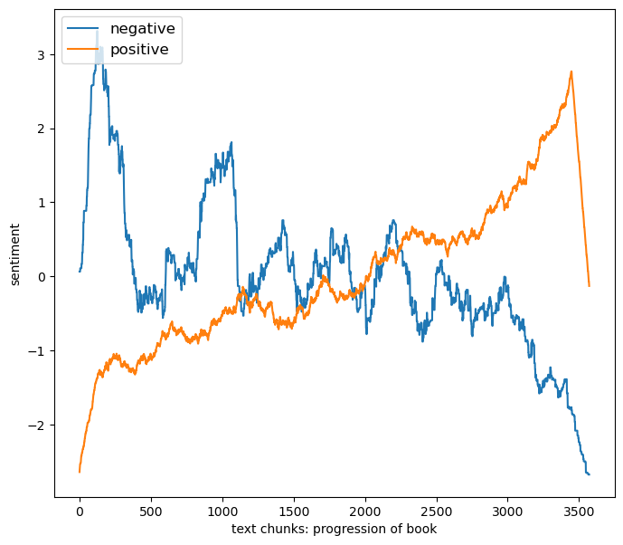
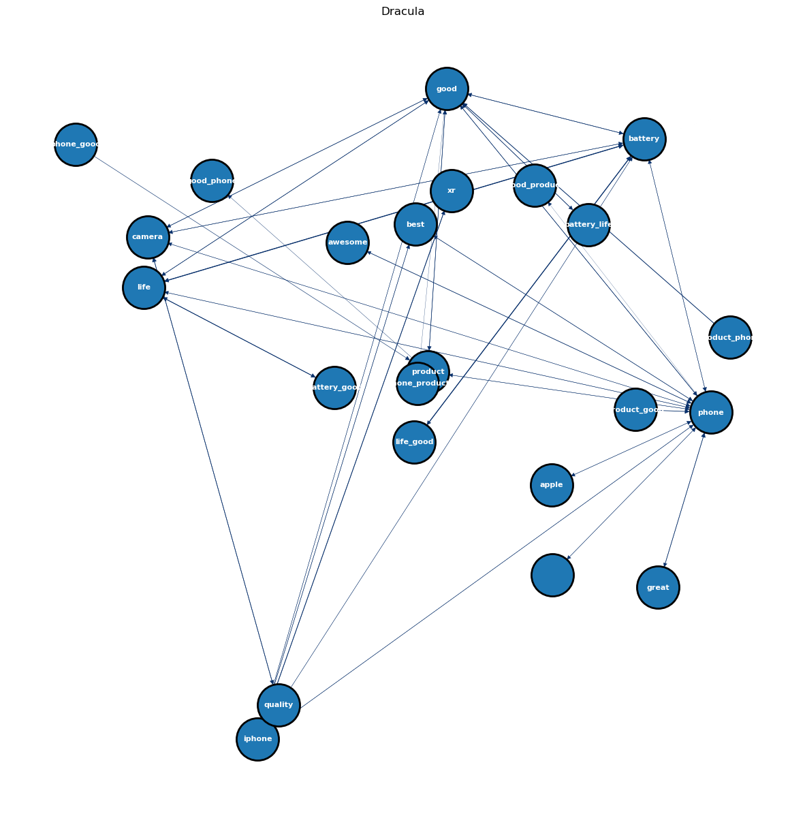

import nltk
import string
from nltk.stem import WordNetLemmatizer
from nltk.stem import PorterStemmer
from nltk.corpus import stopwords
from nltk.tokenize import word_tokenize
from nltk.sentiment import SentimentIntensityAnalyzer
import os
import matplotlib.pyplot as plt
import numpy as np
import pandas as pd
from apyori import apriori
import networkx as nx ARM
Introduction
Association rule mining (ARM) can be used in market analysis to determine what products, given their previous purchases, consumers will also buy. In order to examine consumer purchasing patterns For example, the ARM test can be run on an e-commerce dataset containing electronic transactions of various products by customers. i.e., people are more likely to buy a particular product later on if they purchase it first.
The antecedents are the feature data X. X is the description of the product that the customer purchased in this collection. Finding consequents (Y) is the first step in determining how likely it is that a consumer will buy product X and then purchase product Y based on their confidence and lift.
Theory1
An unsupervised rule-based machine learning technique called association rule mining (ARM) is used to find relationships between variables in big databases. The aim of ARM is to identify rules that will forecast the occurrence of an item based on the occurrences of other items in the training data, given a collection of transactions (training data).
An antecedent (if) and a consequent (then) comprise an association rule. Something that can be found in data is called an antecedent, and something that can be found in connection with the antecedent is called a consequent. Take A and B as itemsets, for instance. An association rule would be A => B.
3 important metrics in ARM:
Support : (supp(X,Y)) As an indicator of how frequently the itemsets X and Y occur together in relation to all other transactions. For example, P(X∩Y)=(total number of transactions) / (number of transactions including X and Y).The minimum (support) criterion is used to eliminate samples that do not have sufficient support to be considered significant.
Confidence : (Conf(X , Y)) Confidence measures the frequency with which items in X and Y occur together in relation to X-containing transactions. conf(X => Y) = P(Y|X) = supp(X ∩ Y) / supp(X) = (number of transactions containing X and Y) / (number of transactions contain X), for example. X is the antecedent and Y is the consequent in this scenario. One of the best ways to highlight the relationship between specific elements in the dataset is to use confidence in association rule mining.
Lift Lifte is the ratio of the actual support to what would be predicted if X and Y were independent is known as the lift. Lift = 1: no relationship between X and Y Lift > 1: positive relationship between X and Y Lift < 1: negative relationship between X and Y
Packages use:
- Apriori
- Eclat
- FP-Growth
Main Goal
I want to use the Assiciation rule mining to explore the intresting annd frequent patterns and relationships in my text dataset. This can help me to see the keywords’ relationship between each other.
Codes
nltk.download('vader_lexicon')
nltk.download('stopwords')
nltk.download('wordnet')
nltk.download('punkt')
nltk.download('omw-1.4')[nltk_data] Downloading package vader_lexicon to
[nltk_data] /Users/sherryqin/nltk_data...
[nltk_data] Package vader_lexicon is already up-to-date!
[nltk_data] Downloading package stopwords to
[nltk_data] /Users/sherryqin/nltk_data...
[nltk_data] Package stopwords is already up-to-date!
[nltk_data] Downloading package wordnet to
[nltk_data] /Users/sherryqin/nltk_data...
[nltk_data] Package wordnet is already up-to-date!
[nltk_data] Downloading package punkt to /Users/sherryqin/nltk_data...
[nltk_data] Package punkt is already up-to-date!
[nltk_data] Downloading package omw-1.4 to
[nltk_data] /Users/sherryqin/nltk_data...
[nltk_data] Package omw-1.4 is already up-to-date!TrueSeparate the text data
import pandas as pd
import numpy as npdf=pd.read_csv('../../../data/00-raw-data/apple_iphone_11_reviews.csv')
df| index | product | helpful_count | total_comments | url | review_country | reviewed_at | review_text | review_rating | product_company | profile_name | review_title | |
|---|---|---|---|---|---|---|---|---|---|---|---|---|
| 0 | 0 | Apple iPhone XR (64GB) - Black | 5,087 people found this helpful | 24 | https://www.amazon.in/Apple-iPhone-XR-64GB-Bla... | India | 2018-12-12 | NOTE: | 3.0 out of 5 stars | Apple | Sameer Patil | Which iPhone you should Purchase ? iPhone 8, X... |
| 1 | 1 | Apple iPhone XR (64GB) - Black | 2,822 people found this helpful | 6 | https://www.amazon.in/Apple-iPhone-XR-64GB-Bla... | India | 2018-11-17 | Very bad experience with this iPhone xr phone.... | 1.0 out of 5 stars | Apple | Amazon Customer | Don't buy iPhone xr from Amazon. |
| 2 | 2 | Apple iPhone XR (64GB) - Black | 1,798 people found this helpful | 0 | https://www.amazon.in/Apple-iPhone-XR-64GB-Bla... | India | 2019-01-27 | Amazing phone with amazing camera coming from ... | 5.0 out of 5 stars | Apple | A | Happy with the purchase |
| 3 | 3 | Apple iPhone XR (64GB) - Black | 1,366 people found this helpful | 14 | https://www.amazon.in/Apple-iPhone-XR-64GB-Bla... | India | 2019-05-02 | So I got the iPhone XR just today. The product... | 1.0 out of 5 stars | Apple | Shubham Dutta | Amazon is not an apple authorised reseller. Pl... |
| 4 | 4 | Apple iPhone XR (64GB) - Black | 536 people found this helpful | 5 | https://www.amazon.in/Apple-iPhone-XR-64GB-Bla... | India | 2019-05-24 | I've been an android user all my life until I ... | 5.0 out of 5 stars | Apple | Nepuni Lokho | Excellent Battery life and buttery smooth UI |
| ... | ... | ... | ... | ... | ... | ... | ... | ... | ... | ... | ... | ... |
| 5005 | 5005 | Apple iPhone XR (64GB) - Black | 0 | 0 | https://www.amazon.in/Apple-iPhone-XR-64GB-Bla... | India | 2019-11-13 | Dhamaka | 4.0 out of 5 stars | Apple | Shreya | Dhamaka phone |
| 5006 | 5006 | Apple iPhone XR (64GB) - Black | 0 | 0 | https://www.amazon.in/Apple-iPhone-XR-64GB-Bla... | India | 2019-11-15 | Goodbye | 4.0 out of 5 stars | Apple | murali hv | Good |
| 5007 | 5007 | Apple iPhone XR (64GB) - Black | 0 | 0 | https://www.amazon.in/Apple-iPhone-XR-64GB-Bla... | India | 2019-12-29 | Nothing | 5.0 out of 5 stars | Apple | Manish | Fantabulous phone. Easy to use. |
| 5008 | 5008 | Apple iPhone XR (64GB) - Black | 0 | 0 | https://www.amazon.in/Apple-iPhone-XR-64GB-Bla... | India | 2019-11-10 | Superbb | 5.0 out of 5 stars | Apple | basil john p | Fantastic |
| 5009 | 5009 | Apple iPhone XR (64GB) - Black | 0 | 0 | https://www.amazon.in/Apple-iPhone-XR-64GB-Bla... | India | 2019-11-05 | Nothing | 5.0 out of 5 stars | Apple | Amazon Customer | Best purchase |
5010 rows × 12 columns
review_col = df['review_text']with open('../../../data/00-raw-data/review.txt', 'w') as file:
for item in review_col:
file.write("%s\n" % item)Read and clean text data
#USER PARAM
input_path = '../../../data/00-raw-data/review.txt'
compute_sentiment = True
sentiment = [] #average sentiment of each chunck of text
ave_window_size = 250 #size of scanning window for moving average
#OUTPUT FILE
output='transactions.txt'
if os.path.exists(output): os.remove(output)
#INITIALIZE
lemmatizer = WordNetLemmatizer()
ps = PorterStemmer()
sia = SentimentIntensityAnalyzer()
#ADD MORE
stopwords = stopwords.words('english')
add=['mr','mrs','wa','dr','said','back','could','one','looked','like','know','around','dont']
for sp in add: stopwords.append(sp)
def read_and_clean(path,START=0,STOP=-1):
global sentiment
#-----------------------
#INSERT CODE TO READ IN AS ONE BIG STING
#-----------------------
file= open(path,'rt',encoding='utf-8')
text= file.read().lower() # convert to lower case
file.close()
#REMOVE HEADER, AND NEW LINES
text=text.replace("'",'') #wasn't --> wasnt
#lines = text.splitlines(); text='';
#lines=lines[START:STOP] # mystring.replace('\n', ' ')
#for line in lines: text=text+' '+line
#-----------------------
#INSERT CODE TO ONLY KEEP CHAR IN string.printable
#-----------------------
tmp=''
printable=set(string.printable)
for char in text:
if char in printable:
tmp+= char
text= tmp
#BREAK INTO CHUNKS (SENTANCES OR OTHERWISE)
sentences=nltk.tokenize.sent_tokenize(text) #SENTENCES
print("NUMBER OF SENTENCES FOUND:",len(sentences)); #print(sentences)
#CLEAN AND LEMMATIZE
keep='0123456789abcdefghijklmnopqrstuvwxy';
new_sentences=[]; vocabulary=[]
for sentence in sentences:
new_sentence=''
# REBUILD LEMITIZED SENTENCE
for word in sentence.split():
#ONLY KEEP CHAR IN "keep"
tmp2=''
for char in word:
if(char in keep):
tmp2=tmp2+char
else:
tmp2=tmp2+' '
word=tmp2
#-----------------------
# INSERT CODE TO LEMMATIZE THE WORDS
#-----------------------
word=tmp2
new_word=lemmatizer.lemmatize(word)
#REMOVE WHITE SPACES
new_word=new_word.replace(' ', '')
#BUILD NEW SENTANCE BACK UP
if( new_word not in stopwords):
if(new_sentence==''):
new_sentence=new_word
else:
new_sentence=new_sentence+','+new_word
if(new_word not in vocabulary): vocabulary.append(new_word)
#SAVE (LIST OF LISTS)
new_sentences.append(new_sentence.split(","))
#SIA
if(compute_sentiment):
#-----------------------
# INSERT CODE TO USE NLTK TO DO SENTIMENT ANALYSIS
#-----------------------
text1=new_sentence.replace(',',' ')
score=sia.polarity_scores(text1)
sentiment.append([score['neg'],score['neu'],score['pos'],score['compound']])
#SAVE SENTANCE TO OUTPUT FILE
if(len(new_sentence.split(','))>2):
f = open(output, "a")
f.write(new_sentence+"\n")
f.close()
sentiment=np.array(sentiment)
print("TOTAL AVERAGE SENTEMENT:",np.mean(sentiment,axis=0))
print("VOCAB LENGTH",len(vocabulary))
return new_sentences
transactions=read_and_clean(input_path,400,-400)
print(transactions[0:5])NUMBER OF SENTENCES FOUND: 3571
TOTAL AVERAGE SENTEMENT: [0.05495659 0.59596556 0.34040045 0.3765529 ]
VOCAB LENGTH 4108
[['note', 'bad', 'experience', 'iphone', 'xr', 'phone'], ['camera', 'found', 'defective', 'non', 'functional'], ['amaon', 'careless'], ['havent', 'got', 'response', 'confirmation', 'replacing'], ['hanging', 'damaged', 'piece', 'worth', '91000', 'rupees']]Analysis
In this part, I recleaned the text data with the news content that collected by the NewsAPI. I cleared out the stopwords, and cleared ou the special characters and punctuations. Than I created the transaction as needed.
Visualize Sentiment
def moving_ave(y,w=100):
#-----------------------
# INSERT CODE TO COMPUTE THE MOVING AVERAGE OF A SIGNAL Y
#-----------------------
mask=np.ones((1,w))/w; mask=mask[0,:]
return np.convolve(y,mask,'same')
# INSERT CODE TO VISUALIZE THE SENTIMENT ANALYSIS AS A TIME-SERIES (SEE PLOT FOR AN EXAMPLE)
if compute_sentiment :
neg=moving_ave(sentiment[:,0],ave_window_size);
neg=(neg-np.mean(neg))/np.std(neg)
neu=moving_ave(sentiment[:,1],ave_window_size);
neu=(neu-np.mean(neu))/np.std(neu)
pos=moving_ave(sentiment[:,2],ave_window_size);
pos=(pos-np.mean(pos))/np.std(pos)
cmpd=moving_ave(sentiment[:,3],ave_window_size);
cmpd=(cmpd-np.mean(cmpd))/np.std(cmpd)
# plot
plt.figure(figsize=(8,7))
indx= np.linspace(0,len(sentiment),len(sentiment))
plt.plot(indx,neg,label='negative')
plt.plot(indx,pos,label='positive')
plt.legend(loc='upper left',fontsize=12)
plt.xlabel('text chunks: progression of book')
plt.ylabel('sentiment')
plt.show()
Re-format output
# RE-FORMAT THE APRIORI OUTPUT INTO A PANDAS DATA-FRAME WITH COLUMNS "rhs","lhs","supp","conf","supp x conf","lift"
def reformat_results(results):
keep=[]
for i in range(0,len(results)):
for j in range(0,len(list(results[i]))):
if j>1:
for k in range(0,len(list(results[i][j]))):
if len(results[i][j][k][0]) != 0:
rhs= list(results[i][j][k][0])
lhs= list(results[i][j][k][1])
conf= float(results[i][j][k][2])
lift= float(results[i][j][k][3])
keep.append([rhs,lhs,supp,conf,supp*conf,lift])
if j == 1:
supp=results[i][j]
return pd.DataFrame(keep, columns=["rhs","lhs","supp","conf","supp x conf","lift"])def convert_to_network(df):
print(df)
#BUILD GRAPH
G = nx.DiGraph() # DIRECTED
for row in df.iterrows():
# for column in df.columns:
lhs="_".join(row[1][0])
rhs="_".join(row[1][1])
conf=row[1][3]; #print(conf)
if(lhs not in G.nodes):
G.add_node(lhs)
if(rhs not in G.nodes):
G.add_node(rhs)
edge=(lhs,rhs)
if edge not in G.edges:
G.add_edge(lhs, rhs, weight=conf)
# print(G.nodes)
# print(G.edges)
return Gdef plot_network(G):
#SPECIFIY X-Y POSITIONS FOR PLOTTING
pos=nx.random_layout(G)
#GENERATE PLOT
fig, ax = plt.subplots()
fig.set_size_inches(15, 15)
#assign colors based on attributes
weights_e = [G[u][v]['weight'] for u,v in G.edges()]
#SAMPLE CMAP FOR COLORS
cmap=plt.cm.get_cmap('Blues')
colors_e = [cmap(G[u][v]['weight']*10) for u,v in G.edges()]
#PLOT
nx.draw(
G,
edgecolors="black",
edge_color=colors_e,
node_size=2000,
linewidths=2,
font_size=8,
font_color="white",
font_weight="bold",
width=weights_e,
with_labels=True,
pos=pos,
ax=ax
)
ax.set(title='Dracula')
plt.show()Train ARM model
# TRAIN THE ARM MODEL USING THE "apriori" PACKAGE
print('Transactions:',pd.DataFrame(transactions))
results=list(apriori(transactions,min_support= 0.05,min_confidence=0.05,use_colnames=True))
print(len(results))Transactions: 0 1 2 3 4 5 \
0 note bad experience iphone xr phone
1 camera found defective non functional None
2 amaon careless None None None None
3 havent got response confirmation replacing None
4 hanging damaged piece worth 91000 rupees
... ... ... ... ... ... ...
3566 good excellent excellent love excellent excellent
3567 overall great product loved good nice
3568 nice colour feature fabulous exultant fabulous
3569 worth good good good good buy
3570 excelent good good good good bill
6 7 8 9 ... 117 118 119 120 121 \
0 None None None None ... None None None None None
1 None None None None ... None None None None None
2 None None None None ... None None None None None
3 None None None None ... None None None None None
4 None None None None ... None None None None None
... ... ... ... ... ... ... ... ... ... ...
3566 good best deal excellent ... None None None None None
3567 product need invoice soft ... None None None None None
3568 amaing None None None ... None None None None None
3569 fine af None None ... None None None None None
3570 missing good defected piece ... None None None None None
122 123 124 125 126
0 None None None None None
1 None None None None None
2 None None None None None
3 None None None None None
4 None None None None None
... ... ... ... ... ...
3566 None None None None None
3567 None None None None None
3568 None None None None None
3569 None None None None None
3570 None None None None None
[3571 rows x 127 columns]
46Analysis
In this part I applied the Apriori Algorithm to find put the frequent itemset of words that appear together in this text dataset.
Visualize the results
# PLOT THE RESULTS AS A NETWORK-X OBJECT
pd_results=reformat_results(results)
G=convert_to_network(pd_results)
plot_network(G) rhs lhs supp conf supp x conf \
0 [] [phone] 0.052086 0.394068 0.020526
1 [phone] [] 0.052086 0.174648 0.009097
2 [apple] [phone] 0.051806 0.424312 0.021982
3 [phone] [apple] 0.051806 0.173709 0.008999
4 [awesome] [phone] 0.054327 0.579104 0.031461
5 [phone] [awesome] 0.054327 0.182160 0.009896
6 [battery] [camera] 0.059647 0.345219 0.020591
7 [camera] [battery] 0.059647 0.434694 0.025928
8 [battery] [good] 0.088211 0.510535 0.045035
9 [good] [battery] 0.088211 0.391304 0.034517
10 [battery] [iphone] 0.050126 0.290113 0.014542
11 [iphone] [battery] 0.050126 0.251404 0.012602
12 [battery] [life] 0.105013 0.607780 0.063825
13 [life] [battery] 0.105013 0.942211 0.098944
14 [battery] [phone] 0.071689 0.414911 0.029744
15 [phone] [battery] 0.071689 0.240376 0.017232
16 [best] [iphone] 0.050686 0.453634 0.022993
17 [iphone] [best] 0.050686 0.254213 0.012885
18 [best] [phone] 0.059087 0.528822 0.031247
19 [phone] [best] 0.059087 0.198122 0.011706
20 [camera] [good] 0.070849 0.516327 0.036581
21 [good] [camera] 0.070849 0.314286 0.022267
22 [camera] [phone] 0.054327 0.395918 0.021509
23 [phone] [camera] 0.054327 0.182160 0.009896
24 [camera] [quality] 0.055447 0.404082 0.022405
25 [quality] [camera] 0.055447 0.607362 0.033676
26 [good] [iphone] 0.063568 0.281988 0.017925
27 [iphone] [good] 0.063568 0.318820 0.020267
28 [good] [life] 0.063008 0.279503 0.017611
29 [life] [good] 0.063008 0.565327 0.035620
30 [good] [phone] 0.113414 0.503106 0.057059
31 [phone] [good] 0.113414 0.380282 0.043129
32 [good] [product] 0.080090 0.355280 0.028454
33 [product] [good] 0.080090 0.493955 0.039561
34 [great] [phone] 0.060487 0.622478 0.037652
35 [phone] [great] 0.060487 0.202817 0.012268
36 [iphone] [phone] 0.079250 0.397472 0.031499
37 [phone] [iphone] 0.079250 0.265728 0.021059
38 [iphone] [xr] 0.071409 0.358146 0.025575
39 [xr] [iphone] 0.071409 0.730659 0.052175
40 [life] [phone] 0.050966 0.457286 0.023306
41 [phone] [life] 0.050966 0.170892 0.008710
42 [phone] [product] 0.066368 0.222535 0.014769
43 [product] [phone] 0.066368 0.409326 0.027166
44 [battery] [life, good] 0.061047 0.353323 0.021569
45 [good] [battery, life] 0.061047 0.270807 0.016532
46 [life] [battery, good] 0.061047 0.547739 0.033438
47 [battery, good] [life] 0.061047 0.692063 0.042249
48 [battery, life] [good] 0.061047 0.581333 0.035489
49 [life, good] [battery] 0.061047 0.968889 0.059148
50 [good] [phone, product] 0.050126 0.222360 0.011146
51 [phone] [good, product] 0.050126 0.168075 0.008425
52 [product] [good, phone] 0.050126 0.309154 0.015497
53 [phone, good] [product] 0.050126 0.441975 0.022154
54 [product, good] [phone] 0.050126 0.625874 0.031373
55 [product, phone] [good] 0.050126 0.755274 0.037859
lift
0 1.321330
1 1.321330
2 1.422740
3 1.422740
4 1.941767
5 1.941767
6 2.515870
7 2.515870
8 2.264745
9 2.264745
10 1.455049
11 1.455049
12 5.453218
13 5.453218
14 1.391218
15 1.391218
16 2.275179
17 2.275179
18 1.773168
19 1.773168
20 2.290437
21 2.290437
22 1.327535
23 1.327535
24 4.426305
25 4.426305
26 1.414294
27 1.414294
28 2.507803
29 2.507803
30 1.686939
31 1.686939
32 2.191197
33 2.191197
34 2.087202
35 2.087202
36 1.332744
37 1.332744
38 3.664583
39 3.664583
40 1.533305
41 1.533305
42 1.372493
43 1.372493
44 5.607621
45 2.578809
46 6.209444
47 6.209444
48 2.578809
49 5.607621
50 3.350415
51 2.098588
52 2.725896
53 2.725896
54 2.098588
55 3.350415 /var/folders/j3/s32rl54j1f76nvbcx9mxg4yc0000gn/T/ipykernel_7293/467521208.py:8: FutureWarning: Series.__getitem__ treating keys as positions is deprecated. In a future version, integer keys will always be treated as labels (consistent with DataFrame behavior). To access a value by position, use `ser.iloc[pos]`
lhs="_".join(row[1][0])
/var/folders/j3/s32rl54j1f76nvbcx9mxg4yc0000gn/T/ipykernel_7293/467521208.py:9: FutureWarning: Series.__getitem__ treating keys as positions is deprecated. In a future version, integer keys will always be treated as labels (consistent with DataFrame behavior). To access a value by position, use `ser.iloc[pos]`
rhs="_".join(row[1][1])
/var/folders/j3/s32rl54j1f76nvbcx9mxg4yc0000gn/T/ipykernel_7293/467521208.py:10: FutureWarning: Series.__getitem__ treating keys as positions is deprecated. In a future version, integer keys will always be treated as labels (consistent with DataFrame behavior). To access a value by position, use `ser.iloc[pos]`
conf=row[1][3]; #print(conf)
/var/folders/j3/s32rl54j1f76nvbcx9mxg4yc0000gn/T/ipykernel_7293/183469868.py:13: MatplotlibDeprecationWarning: The get_cmap function was deprecated in Matplotlib 3.7 and will be removed two minor releases later. Use ``matplotlib.colormaps[name]`` or ``matplotlib.colormaps.get_cmap(obj)`` instead.
cmap=plt.cm.get_cmap('Blues')
Analysis
I set min_support= 0.05, min_confidence=0.05, because I tried several times with smaller min_support and the result is too large so it did not ran out any resuly, but with larger min_support, too little results came out. When min_support= 0.05, min_confidence=0.05, the length of result is 46. So i believe this is the optimal number.
From the plot we can see thet the most connection are between iphone and its device model and the functions. Also there are many positive adjective that highly related to iphone and its functions. For example, “phone” are connected to “awesome” “best” “good_product” and “good_phone”, etc. Thus, we can actually see when people mention iphone or its devices and functions, the most adjective are positive. So, we can conclude that people are positive to the Apple products
Conclusion
In this part, I did data cleaning for the text data, and then created the transaction. After that, I trained the model and created the network and used Apriori package to dentifying the frequent individual items. Based on those I get the conclusion that, when people mentions Apple, they always mention its devices names, and also some positive adjective words. Thus, people has an positive attitude towards Apple products,
Imporvement
The result did provide some sense about people’s attitude related to apple products. But if we want to find out more about the its most competitive compeitors, those text dataset did not mention any, we maybe find a textdataset with more information with Apple and its competitors can be better analyzing its potential competitors.
Footnotes
Wikimedia Foundation. (2023, October 10). Association rule learning. Wikipedia. https://en.wikipedia.org/wiki/Association_rule_learning↩︎